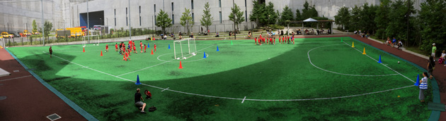

開講しているクラス
|
|
土曜日
|
 LIONS LIONS
10:15~11:15am
|
 BULLDOGS BULLDOGS
10:15~11:15am
|
 PUPS PUPS
11:25~11:55am
|
Ground & Footware （グラウンド及び履物について）
人工芝フットサルコートは、第３世代の人工芝ですのでトレーニングシューズまたはフットサル用のブーツを着用して下さい。（金属スパイクのついたサッカーブーツは着用できません。
（履物チャートをご確認ください）
注：保護者・見学の方：ハイヒール、ベビーカー及び車椅子で人工芝への立ち入りはできません。
Getting there （行き方）
車の場合：
ジャンクション内に有料の駐車場があり、川側の道路からアクセス可能です。
駐車場が満車の場合は、近隣の駐車場をご利用の上、徒歩でご来場ください。高速緊急車両の出動用ゲート前の駐車は禁止です。
電車：地下鉄半蔵門／新玉川線の池尻大橋駅、東口より徒歩５分です。
悪天候の場合
雨天及び悪天候（暴風雨・大雪・雷等）やセッション開始前までの悪天候によりグラウンドの状態が悪い場合、天然芝を使用できませんので、体育館でセッションを行います。
体育館の入り口で、内履きに履き替えて下さい。また、保護者や見学者も同様に入り口で履き替えて下さい。
セッション当日は、体育館と校庭のどちらでセッションを行うか、連絡はいたしませんのでご留意ください。
現地の状況により、セッション場所を決定しますので、内履き（きれいで、靴底が平の運動靴）と外履き（靴底が平の運動靴）を必ず両方ご用意ください。
（注）体育館が使用できない日がある場合は、事前にメールにて連絡を差し上げます。体育館が使用できない日で、悪天候によりセッションが中止になった場合は、返金や振替等は致しかねますので、ご了承ください。
料金
|
1学期（12週）の料金。
注：参加料金はシーズン毎の料金ですので、全額のお支払をお願いします。12回全てにご参加頂けない場合でも料金の調整は致しませんのでご了承くださいませ。
|
|
スケジュール：4月2日 - 7月16日（合計12回）
4月2日、9日、16日 / 5月7日、14日、21日 / 6月4日、11日、18日 / 7月2日、9日、16日
|
|
クラス
|
目黒区メンバー以外の方
|
目黒区メンバー
|
|
Pups パップス （3歳～4歳）
|
21,000円/12回
|
3,600円/3回
|
|
Bulldogs ブルドッグ （5歳〜6歳）／Lions ライオン （7歳～8歳）
|
28,800円/12回
|
3,600円/3回
|
|
注：目黒区民枠については、受付窓口が異なります。
詳しくはこちらをご覧ください：http://www.opus-club.com/?page_id=219
|
施設利用規則
セッションご参加にあたっては、BFA members guide（メンバーガイド）の会則を必ずご一読ください。
- 人工芝用のシューズ又はトレーニングシューズ以外は使用できません。 金属製のスパイク他、天然芝用のスパイクシューズでの利用は出来ません。
- この人工芝のグラウンド上での飲食は出来ません。 飲食する方は、人工芝以外のエリアでお願いいたします。
- ゴミを捨てるところはありません。 読み終わった雑誌や新聞、飲み終わった空き缶やペットボトル等、持ち込まれたゴミは必ず持ち帰ってください。
- グラウンドの中にペットの持ち込みは出来ません。ペットの散歩は、人工芝以外のエリアでお願いいたします。
- 人工芝面の保護のため、来園者の方々も男女を問わず、ヒールのある靴での人工芝への立ち入り、自転車の乗り入れ、キックボードやスケートボードの使用、ベビーバギーの立ち入りは出来ません。
トップへ


{kind=link}